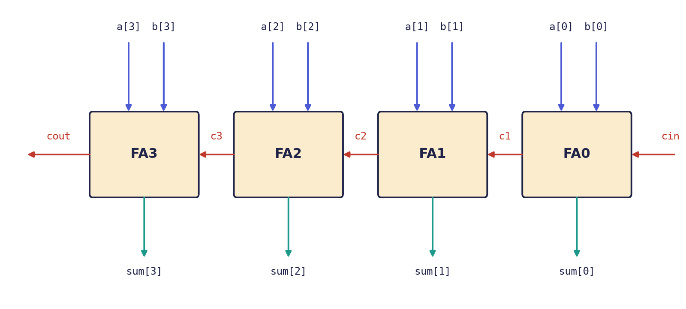

Chapter 5: Verilog: Building, Testing and Debugging Designs¶
The previous two chapters taught the constructs. This chapter uses them. It first adds the tools for handling many bits at once (vectors, concatenation, parameters and generate), then builds a useful circuit bottom-up, from a full adder through a ripple-carry adder to a small ALU, proves each piece with a testbench, and finishes with the bugs that nearly every beginner writes and how never to write them. Hardware that you cannot test is hardware that you cannot trust, so the testbench is treated as part of the design.
5.1 Vectors and concatenation¶
A multi-bit signal is a vector, declared with a range [msb:lsb]. The convention [N-1:0] puts bit 0, the least significant bit, on the right, as in the registers of Chapter 1.
wire [7:0] data; // 8 bits; data[7] is the most significant
wire [3:0] nibble;
wire msb;
assign nibble = data[3:0]; // a part-select: the low four bits
assign msb = data[7]; // a bit-select: one bit
Braces { , } build wider vectors by concatenation: the bits are placed side by side, the first item on the left. {n{x}} repeats x \(n\) times. No logic is built; it is only wiring.
| Write | Meaning | Example result |
|---|---|---|
{byte1, byte0} |
join: byte1 becomes the top half |
8'hAB, 8'hCD give 16'hABCD |
{data[6:0], data[7]} |
rotate left by one | 1001_0110 becomes 0010_1101 |
{4'b0000, nibble} |
zero-extend 4 bits to 8 | 1011 becomes 0000_1011 |
{{4{n[3]}}, n} |
sign-extend: copy the sign bit | 1011 (−5) becomes 1111_1011 (−5) |
5.2 Parameters and generate¶
A parameter is a constant chosen when a module is used, so that one description serves any width. It is overridden at the instance with #( ).
module adder #(parameter WIDTH = 8) (
input wire [WIDTH-1:0] a, b,
output wire [WIDTH:0] sum // one extra bit holds the carry
);
assign sum = a + b;
endmodule
// a 16-bit copy:
// adder #(.WIDTH(16)) u_add (.a(x), .b(y), .sum(s));
The generate construct stamps out many copies of an instance while the design is being built (elaboration), which is ideal for arrays of identical blocks. The loop variable is a genvar, and each iteration is given a name.
genvar i;
generate
for (i = 0; i < 8; i = i + 1) begin : slice
full_adder fa (.a(a[i]), .b(b[i]), .cin(c[i]), .sum(s[i]), .cout(c[i+1]));
end
endgenerate
This builds eight full adders in a chain, the carry-out of one feeding the carry-in of the next. It is not a loop that runs when the circuit works: the circuit contains eight adders.
5.3 A worked build: full adder, ripple adder, ALU¶
Small pieces, combined bottom-up, make something useful. We build an adder and then an ALU, and test each.
Step 1: a full adder¶
A full adder adds three bits (two operands and a carry in) and produces a sum bit and a carry out. The sum is 1 when an odd number of inputs are 1; the carry out is 1 when at least two are, the majority function of Exercise 3.3.
module full_adder (
input wire a, b, cin,
output wire sum, cout
);
assign sum = a ^ b ^ cin;
assign cout = (a & b) | (a & cin) | (b & cin);
endmodule
Step 2: a 4-bit ripple-carry adder¶
Chain four full adders (Figure 5.1); each carry out feeds the next carry in.
module ripple_adder4 (
input wire [3:0] a, b,
input wire cin,
output wire [3:0] sum,
output wire cout
);
wire [3:1] c; // c[k] is the carry into bit k
full_adder fa0 (.a(a[0]), .b(b[0]), .cin(cin), .sum(sum[0]), .cout(c[1]));
full_adder fa1 (.a(a[1]), .b(b[1]), .cin(c[1]), .sum(sum[1]), .cout(c[2]));
full_adder fa2 (.a(a[2]), .b(b[2]), .cin(c[2]), .sum(sum[2]), .cout(c[3]));
full_adder fa3 (.a(a[3]), .b(b[3]), .cin(c[3]), .sum(sum[3]), .cout(cout));
endmodule

Each stage must wait for the carry from the stage to its right. That waiting, the carry rippling along, is why a long adder is slow, and why faster adder designs exist.
Example 5.1: 11 + 6 on the ripple adder
Let a = 1011 (11), b = 0110 (6) and cin = 0. Working from bit 0:
| Bit | a |
b |
carry in | sum |
carry out |
|---|---|---|---|---|---|
| 0 | 1 | 0 | 0 | 1 | 0 |
| 1 | 1 | 1 | 0 | 0 | 1 |
| 2 | 0 | 1 | 1 | 0 | 1 |
| 3 | 1 | 0 | 1 | 0 | 1 |
Reading the sum bits from bit 3 down to bit 0 gives sum = 0001 with cout = 1: the five-bit result 1_0001 is 17, as it should be.
Step 3: a small ALU¶
A 4-bit ALU chooses between add, subtract, AND and OR with a 2-bit operation code, and flags a zero result. Subtraction reuses the adder by the two's complement identity of Chapter 1, \(a - b = a + \overline{b} + 1\).
module alu4 (
input wire [3:0] a, b,
input wire [1:0] op, // 00 add 01 sub 10 and 11 or
output reg [3:0] result,
output reg carry, // carry out (for sub: 1 means no borrow)
output wire zero // 1 when result == 0
);
reg [4:0] tmp; // 5 bits: room for the carry
always @(*) begin
carry = 1'b0;
result = 4'b0000;
tmp = 5'b00000;
case (op)
2'b00: begin tmp = {1'b0, a} + {1'b0, b};
result = tmp[3:0]; carry = tmp[4]; end
2'b01: begin tmp = {1'b0, a} + {1'b0, ~b} + 5'd1;
result = tmp[3:0]; carry = tmp[4]; end
2'b10: result = a & b;
2'b11: result = a | b;
endcase
end
assign zero = (result == 4'b0000);
endmodule
A trap in the subtract line
The tempting line tmp = a + (~b) + 5'd1; looks right and is wrong. Verilog first widens every operand to the size of the whole expression, here five bits because tmp has five bits, and only then inverts. For b = 0100, ~b becomes 1_1011, not 1011. The four-bit difference still comes out right, but carry is inverted: it reads 0 when no borrow occurred and 1 when one did. Writing {1'b0, ~b} says exactly what is meant, because inside braces each item keeps its own width, so ~b is inverted at four bits and only then given a leading 0. The lesson is general: in Verilog the width of an expression is decided by its context, so when widths differ, write the extension out yourself.
The numbers to check by hand are collected in the next section, together with the testbench that produces them.
5.4 Testbenches: simulating your design¶
A testbench is a Verilog module with no ports. It is never built into hardware. Inside it, you place your design, the device under test (DUT), wire its pins, change the inputs over time and watch the outputs. Because it is never synthesised, it may use delays and printing.
| Construct | What it does |
|---|---|
initial |
runs once, starting at time 0: the place for stimulus |
#10 |
wait 10 time units before the next statement |
$display(...) |
print once, like printf |
$monitor(...) |
print again automatically whenever a listed signal changes |
$dumpfile, $dumpvars |
record every signal to a waveform file, to view in GTKWave |
$finish |
end the simulation |
A first testbench for the ALU drives five operations and prints the results:
`timescale 1ns/1ps
module alu4_tb;
reg [3:0] a, b; // drive these
reg [1:0] op;
wire [3:0] result; // watch these
wire carry, zero;
alu4 dut (.a(a), .b(b), .op(op),
.result(result), .carry(carry), .zero(zero));
initial $monitor("op=%b a=%d b=%d -> result=%d carry=%b zero=%b",
op, a, b, result, carry, zero);
initial begin
a = 3; b = 5; op = 2'b00; #10; // 3 + 5
a = 9; b = 4; op = 2'b01; #10; // 9 - 4
a = 6; b = 3; op = 2'b10; #10; // 0110 & 0011
a = 8; b = 8; op = 2'b01; #10; // 8 - 8: zero
$finish;
end
endmodule
What the simulator prints is
op=00 a= 3 b= 5 -> result= 8 carry=0 zero=0
op=01 a= 9 b= 4 -> result= 5 carry=1 zero=0
op=10 a= 6 b= 3 -> result= 2 carry=0 zero=0
op=01 a= 8 b= 8 -> result= 0 carry=1 zero=1
Check each line by hand, because that is the habit that finds bugs. For 9 - 4, the subtract path computes \(01001 + 01011 + 1 = 10101\), so result = 0101 (5) and carry = tmp[4] = 1 (no borrow). For 8 - 8, it computes \(01000 + 00111 + 1 = 10000\), so result = 0000, carry = 1 and zero = 1. The AND line is \(0110 \wedge 0011 = 0010 = 2\).
To record waveforms, add
initial begin
$dumpfile("alu4.vcd");
$dumpvars(0, alu4_tb);
end
and open alu4.vcd in GTKWave. A waveform shows when things happen, which a printed list cannot.
Self-checking testbenches¶
A testbench that only prints needs a person to read the output, and people miss errors, especially among hundreds of cases. A good testbench judges itself: it computes the expected answer, compares, counts the failures and prints PASS or FAIL. Exercise 5.5 builds one that tries all 1 536 combinations of an extended ALU.
5.5 Pitfalls¶
Three bugs are written by nearly every beginner, and a fourth catches the careful as well.
The accidental latch¶
If a combinational always @(*) block does not assign an output on every path (a missing else, an uncovered case), the output must remember its old value, so synthesis builds a latch: memory in combinational logic. It is almost never what you wanted and a source of timing trouble.
// BAD: no else, so y holds its old value and a latch is inferred
always @(*) begin
if (sel) y = a;
end
// GOOD: a default first, so every path gives y a value
always @(*) begin
y = 1'b0;
if (sel) y = a;
end
A full else, or a default in a case, works too. The cure is a habit: assign every output a default at the top of the block.
The incomplete sensitivity list¶
In old-style blocks such as always @(a or b), forgetting a signal (here c) makes simulation and hardware disagree: the simulator ignores changes on c, but the synthesised gates do not.
always @(a or b) // c is missing!
y = a & b & c;
The fix is to always write @(*) and let the tool build the list.
Blocking assignment in clocked logic¶
Using = inside always @(posedge clk) can create race conditions and mismatches between simulation and synthesis, especially when one register feeds another.
always @(posedge clk) begin
b = a; // b changes now...
c = b; // ...so c gets the new b
end
This builds one flip-flop stage where you may have meant two, and its behaviour can depend on the order in which other blocks happen to run. The fix is <= for every clocked assignment.
Expression width¶
The trap in the subtract line (Section 5.3) is the same family of bug: widths decided by context. The tool will not warn you; the testbench will, if it checks the carry as well as the result.
Questions to ask of every block
Is this block combinational or clocked? If combinational, does every output get a value on every path, and is the sensitivity list @(*)? If clocked, are all assignments non-blocking, and does the reset (if any) cover every register? Are all widths in each expression equal?
5.6 Summary¶
- A vector is declared
[N-1:0]; concatenation joins bits (no logic),{n{x}}repeats them, and the common forms rotate, zero-extend and sign-extend. - Parameters make a module serve any width; generate builds repeated structure at elaboration time.
- Build bottom-up: a full adder, a ripple adder (slow because the carry ripples), an ALU, and test each piece.
- In an expression, width comes from context. Write
{1'b0, ~b}rather than relying on widening. - A testbench has no ports, uses
initial, delays and$displayor$monitor, and is never synthesised. A self-checking testbench compares with expected values itself and printsPASSorFAIL. - The big bugs: accidental latches (give every output a default), incomplete sensitivity lists (use
@(*)), blocking assignments in clocked blocks (use<=), and expression-width mistakes.
5.7 Exercises¶
Exercise 5.1. Trace the 4-bit ripple adder for a = 0111, b = 0001, cin = 0 bit by bit. What does it show about the speed of a ripple adder?
Answer
| Bit | a |
b |
carry in | sum |
carry out |
|---|---|---|---|---|---|
| 0 | 1 | 1 | 0 | 0 | 1 |
| 1 | 1 | 0 | 1 | 0 | 1 |
| 2 | 1 | 0 | 1 | 0 | 1 |
| 3 | 0 | 0 | 1 | 1 | 0 |
The result is sum = 1000 (8) with cout = 0: \(7 + 1 = 8\). The carry created at bit 0 had to travel through all the stages before bit 3 could settle, so the delay of the adder grows with its width. This is the worst case for a ripple adder.
Exercise 5.2. Use parameter and generate to write an \(N\)-bit ripple-carry adder from the full_adder module.
Answer
module ripple_adder #(parameter N = 8) (
input wire [N-1:0] a, b,
input wire cin,
output wire [N-1:0] sum,
output wire cout
);
wire [N:0] c; // carry chain: N + 1 wires
assign c[0] = cin;
genvar i;
generate
for (i = 0; i < N; i = i + 1) begin : stage
full_adder fa (.a(a[i]), .b(b[i]), .cin(c[i]),
.sum(sum[i]), .cout(c[i+1]));
end
endgenerate
assign cout = c[N];
endmodule
The instance is ripple_adder #(.N(16)) u (...) for 16 bits. For synthesis one would usually write the one-line behavioural alternative, assign {cout, sum} = a + b + cin;, and let the tool choose a good adder; the structural version shows how generate and hierarchy work.
Exercise 5.3. For alu4, work out the three outputs result, carry and zero for op = 01 (subtract) with (a) a = 7, b = 9; (b) a = 5, b = 5. Then give the output of the faulty line tmp = a + (~b) + 5'd1; for case (a), and say what is wrong with it.
Answer
(a) \(a - b = -2\). With the correct line, \(00111 + 00110 + 1 = 01110\), so result = 1110 (which is \(-2\) in 4-bit two's complement), carry = 0 (a borrow occurred), zero = 0. (b) \(00101 + 01010 + 1 = 10000\), so result = 0000, carry = 1, zero = 1. With the faulty line, in case (a) ~b is evaluated at five bits as 10110, so the sum is \(00111 + 10110 + 1 = 11110\) (five bits), and result = 1110 is still right but carry = tmp[4] = 1, the opposite of the correct 0. The carry flag is inverted by the context-widening of ~.
Exercise 5.4. What is the difference between $display and $monitor, and why can neither be used in a design that is to be synthesised?
Answer
$display prints once, at the moment the statement is executed; $monitor registers a message that is printed again automatically each time one of its listed signals changes. Both are simulation system tasks: they print to a screen or file, which no chip can do, so a synthesis tool ignores them or rejects them. The same is true of delays such as #10.
Exercise 5.5 (an ALU with a self-checking testbench). Extend the ALU to six operations: ADD, SUB, AND, OR, XOR and SLT (set the result to 1 if \(a < b\), unsigned, else 0), with outputs y, carry and zero. For SUB, compute {1'b0,a} + {1'b0,~b} + 5'd1, so that carry = 1 means "no borrow". Write a testbench that loops over all 256 pairs \((a, b)\) for each operation, compares with a reference computed in the testbench, counts errors and prints PASS or FAIL. How many cases are checked, and what do the hand-checked values below show?
Answer
module alu6 (
input wire [3:0] a, b,
input wire [2:0] op, // 000 add 001 sub 010 and 011 or 100 xor 101 slt
output reg [3:0] y,
output reg carry,
output wire zero
);
reg [4:0] t;
always @(*) begin
t = 5'd0; carry = 1'b0;
case (op)
3'b000: begin t = {1'b0, a} + {1'b0, b};
y = t[3:0]; carry = t[4]; end
3'b001: begin t = {1'b0, a} + {1'b0, ~b} + 5'd1;
y = t[3:0]; carry = t[4]; end
3'b010: y = a & b;
3'b011: y = a | b;
3'b100: y = a ^ b;
3'b101: y = (a < b) ? 4'd1 : 4'd0;
default: y = 4'd0;
endcase
end
assign zero = (y == 4'd0);
endmodule
`timescale 1ns/1ps
module alu6_tb;
reg [3:0] a, b;
reg [2:0] op;
wire [3:0] y;
wire carry, zero;
reg [3:0] exp_y;
reg exp_c;
integer ia, ib, iop, errors;
alu6 dut (.a(a), .b(b), .op(op), .y(y), .carry(carry), .zero(zero));
initial begin
errors = 0;
for (iop = 0; iop < 6; iop = iop + 1)
for (ia = 0; ia < 16; ia = ia + 1)
for (ib = 0; ib < 16; ib = ib + 1) begin
a = ia; b = ib; op = iop;
case (iop)
0: begin exp_y = ia + ib; exp_c = ((ia + ib) > 15); end
1: begin exp_y = ia - ib; exp_c = (ia >= ib); end
2: begin exp_y = ia & ib; exp_c = 1'b0; end
3: begin exp_y = ia | ib; exp_c = 1'b0; end
4: begin exp_y = ia ^ ib; exp_c = 1'b0; end
default: begin exp_y = (ia < ib); exp_c = 1'b0; end
endcase
#1;
if (y !== exp_y || carry !== exp_c || zero !== (exp_y == 4'd0)) begin
errors = errors + 1;
$display("FAIL op=%0d a=%0d b=%0d: y=%0d carry=%b", iop, ia, ib, y, carry);
end
end
if (errors == 0) $display("PASS: %0d cases", 6 * 256);
else $display("FAIL: %0d errors", errors);
$finish;
end
endmodule
The loops cover \(6 \times 16 \times 16 = 1536\) cases, and a correct design reports PASS: 1536 cases. Values worth checking by hand: \(7 - 9\) gives y = 1110, carry = 0; \(9 - 7\) gives y = 0010, carry = 1; \(5 - 5\) gives y = 0000, zero = 1, carry = 1; \(9 + 9\) gives y = 0010, carry = 1; SLT with \(a = 3\), \(b = 12\) gives y = 0001. A testbench that only drew waveforms would need a person to spot errors, and people miss them among 1 536 cases.
Exercise 5.6. Find the three mistakes in this module, and correct them.
module bad (input wire clk, a, b, c, sel, output reg y, output reg q);
always @(a or b)
if (sel) y = a & b & c;
always @(posedge clk)
q = y;
endmodule
Answer
First, the sensitivity list (a or b) omits c and sel; write always @(*). Second, y is not assigned when sel = 0, so a latch is inferred; give it a default value or an else. Third, the clocked block uses the blocking assignment =; write q <= y;. Corrected:
module good (input wire clk, a, b, c, sel, output reg y, output reg q);
always @(*) begin
y = 1'b0;
if (sel) y = a & b & c;
end
always @(posedge clk)
q <= y;
endmodule